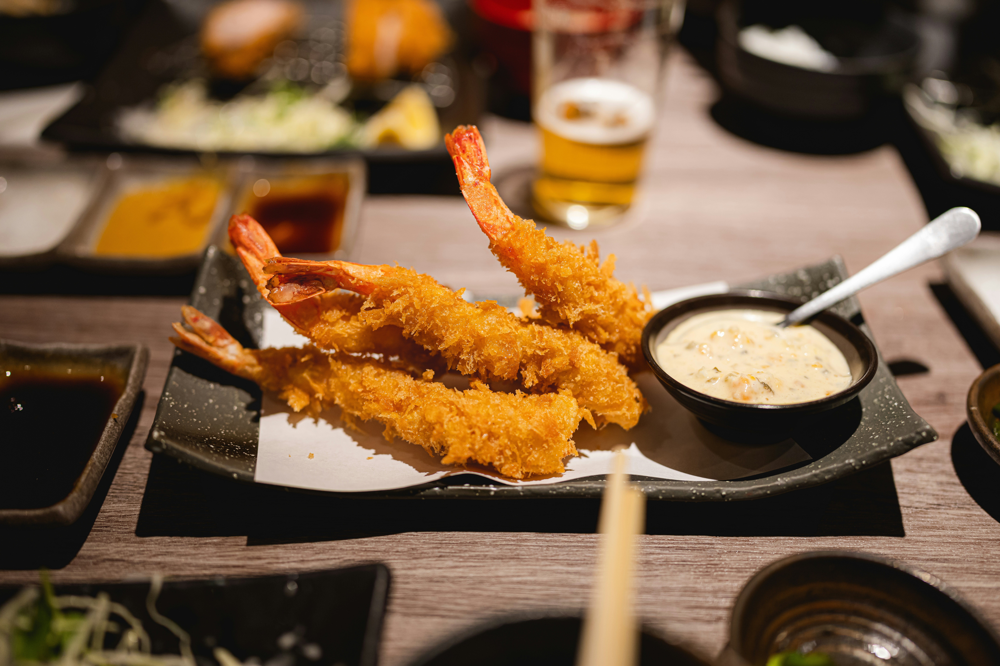

Tempura Variada
Crujiente y deliciosa, fritura japonesa tradicional.
Descripción
La tempura es un plato japonés consistente en mariscos y verduras rebozados y fritos.
Se sirve acompañado de salsa tentsuyu y se caracteriza por su textura ligera y crujiente.
Galería
Tempura de Camarón
Tempura de Verduras

Tempura Mixta
×
❮
❯
Nombre del plato